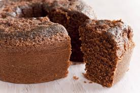

üç´ Receita de Bolo de Chocolate

Ingredientes
- 2 xícaras de farinha de trigo
- 1 xícara de açúcar
- 1 xícara de chocolate em pó
- 1 colher (sopa) de fermento
- 2 ovos
- 1 xícara de leite
- 1/2 xícara de óleo
Modo de Preparo
- Pré-aqueça o forno a 180°C.
- Misture os ingredientes secos em uma tigela.
- Adicione os ovos, leite e óleo, e misture bem até formar uma massa homogênea.
- Despeje a massa em uma forma untada e enfarinhada.
- Asse por cerca de 35-40 minutos ou até que um palito saia limpo.
- Deixe esfriar e sirva!